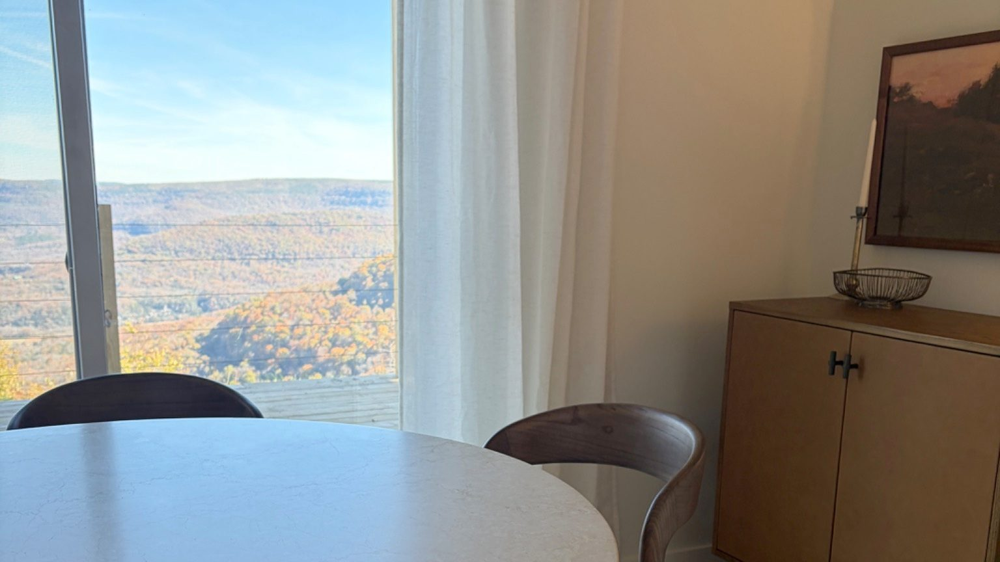
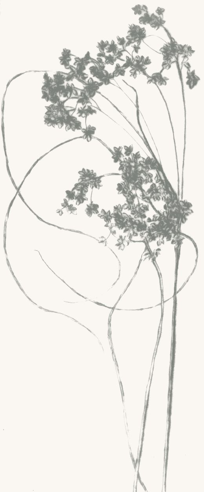
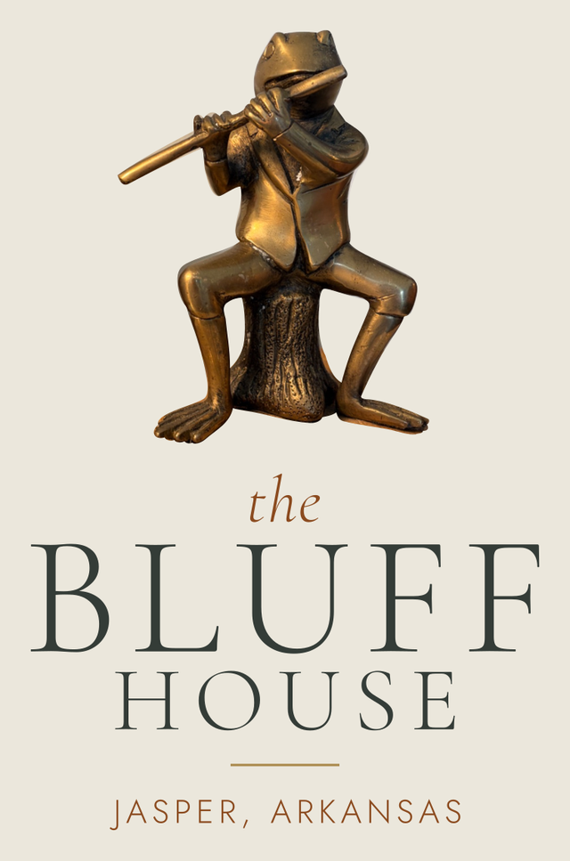

Everything else is on a schedule —
The canyon
never rushes.
A proper house for six, above the Arkansas Grand Canyon in Jasper, Arkansas.
Check datesMornings
on the ridge
Coffee from the Moccamaster, with a view clear across the canyon. Some mornings the canyon below fills with fog, and you can sit and watch it lift.
The Buffalo River is a short drive down the mountain, some of the best hikes in Arkansas are minutes from the door, and the square in Jasper is close enough for pizza or prime rib by supper.



Good sheets, good coffee, and a record on the player
- Room for six
- Two king bedrooms and a bunk room (twin over double).
- The beds
- Leesa mattresses, hotel-grade linens, blackout curtains in every bedroom, and Apotheke in the bath.
- The design
- Made for this place, from the colors of the Ozarks and the Buffalo River country to the old landscapes on the walls.
- After the trail
- Games and a record nook inside. A hot tub and a fire pit for s'mores out back.
- Supper
- A kitchen set up for real meals, and a table on the deck for eating outside.
Down the mountain,
the Buffalo.
The Buffalo was the country's first National River, and it runs just below the ridge. The map behind this page is the 1967 survey of the river near Jasper and Pruitt.

Our favorite hikes
- Fern Falls Good with kids2 min
- Round Top Mountain Good with kids10 min
- Alum Cove Natural Bridge Good with kids12 min
- Big Creek Cave Falls Good with kids15 min
- Mill Creek Loop Good with kids25 min
- Pedestal Rocks & Kings Bluff30 min
- Lost Valley Good with kids40 min
- Whitaker Point (Hawksbill Crag)55 min
Drive times from the house. The Field Box by the door has the rest.
In town
- Low Gap CafeJasper
- Jasper Pizza CompanyJasper
- Daisy QueenHighway 7
- Harps, for groceriesJasper
Frequent
questions

- How close is the river?
- Close. The nearest float, Ozark to Pruitt, starts just down Highway 7. It's two miles of long pools and small riffles, and it's a good first float for kids. Outfitters in Ponca and Jasper rent boats and run shuttles. If you're looking for a wading spot, we love the Little Buffalo River access by Bradley Park (15 minutes), Mill Creek Trail (25 minutes), and Kyle's Landing (35 minutes).
- Is the house good for kids?
- It was set up with families in mind. There's a bunk room upstairs, toys for imaginative play, and kid-friendly plates and gear (a pack and play and a high chair). The Field Box by the door has our favorite kid-friendly hikes, and there's a playground nearby on the Little Buffalo in Jasper (Bradley Park).
- When are check-in and check-out?
- Check-in is at 4:00 and check-out is at 11:00. If you need a little more time on either end, message us before you arrive and we'll see what we can do.
- What if our plans change?
- Cancel at least 14 days before arrival for a full refund. After that, the stay can't be refunded.
- When can we book?
- We're opening a few dates at a time this winter. Follow along on Instagram, and we'll post them there first.

You'll want to
stay a while.
The calendar opens here soon. We're opening a few dates at a time this winter, and we'll post them on Instagram first.
Follow along